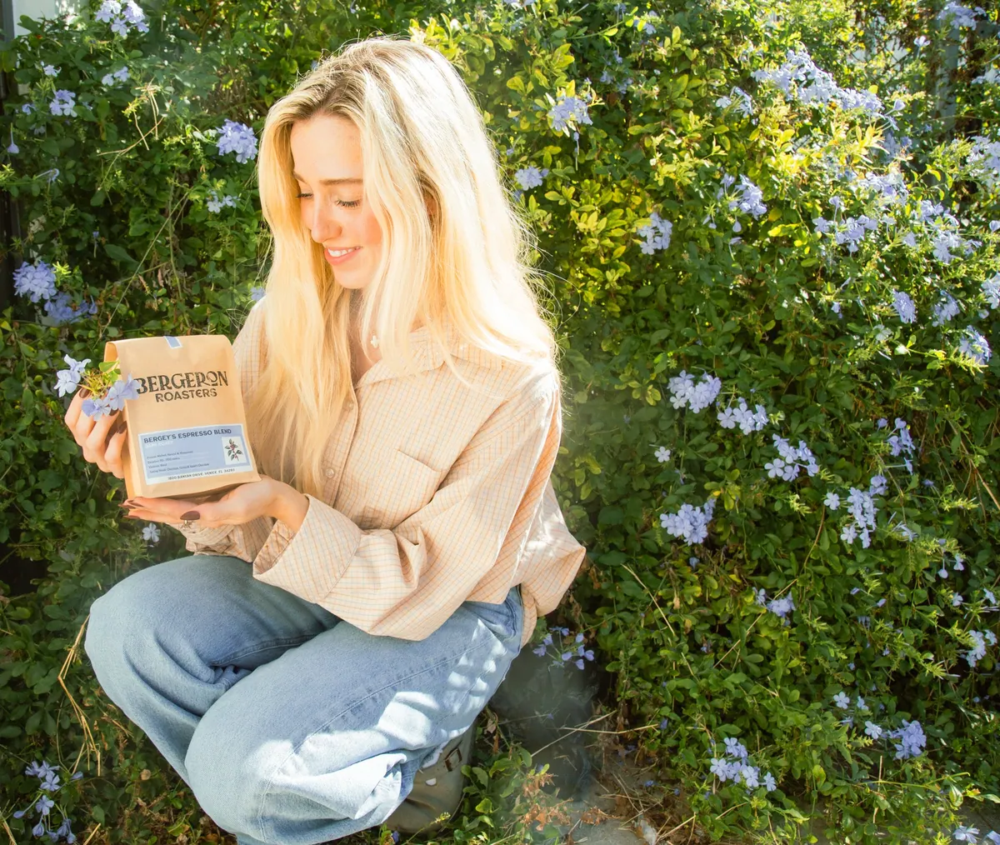
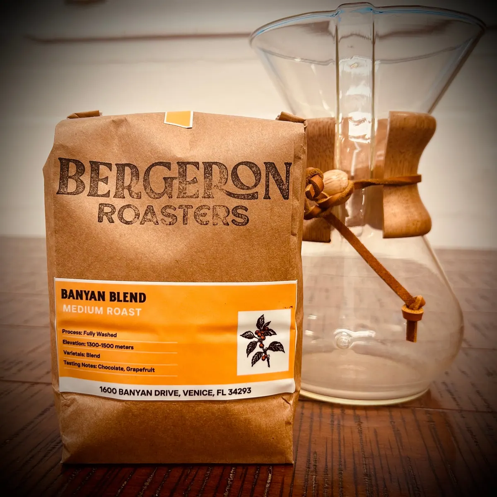
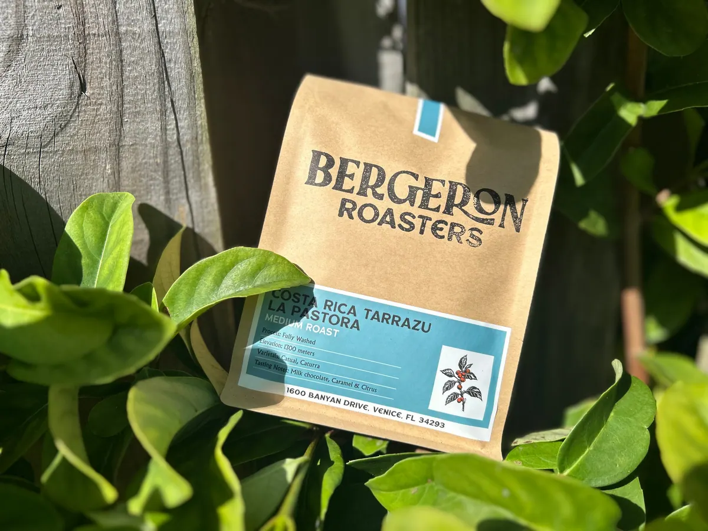
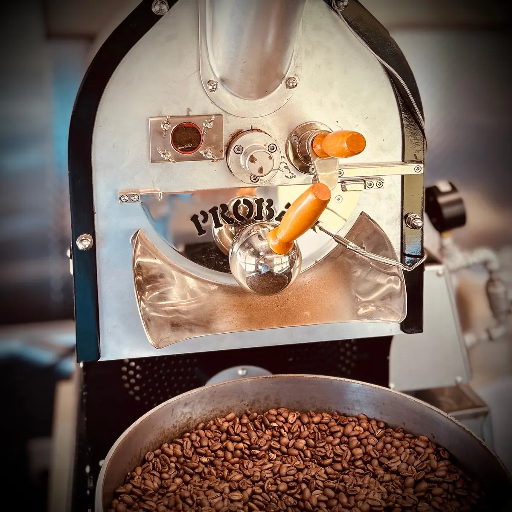
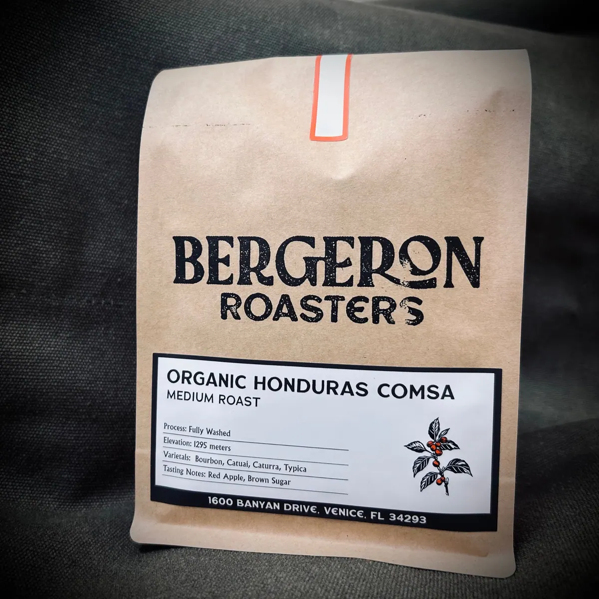
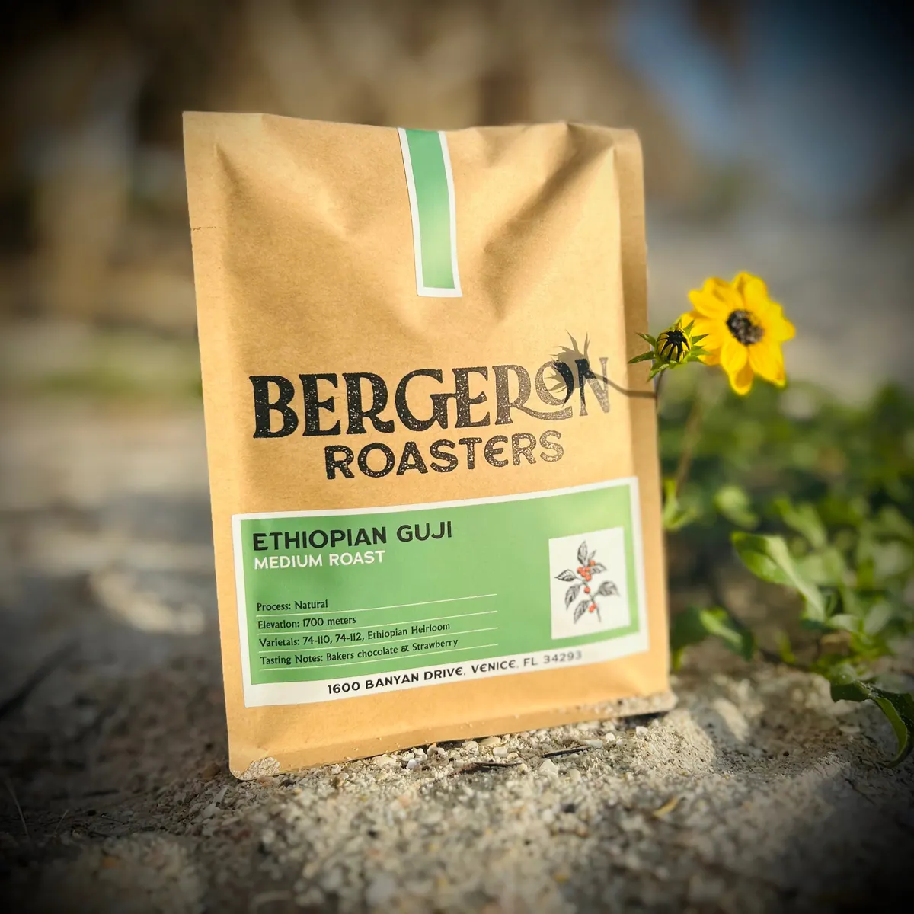
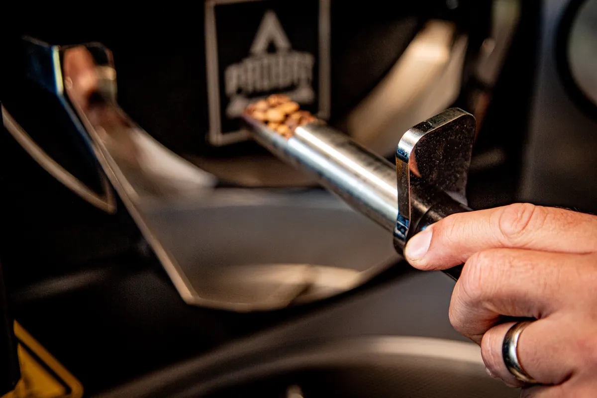
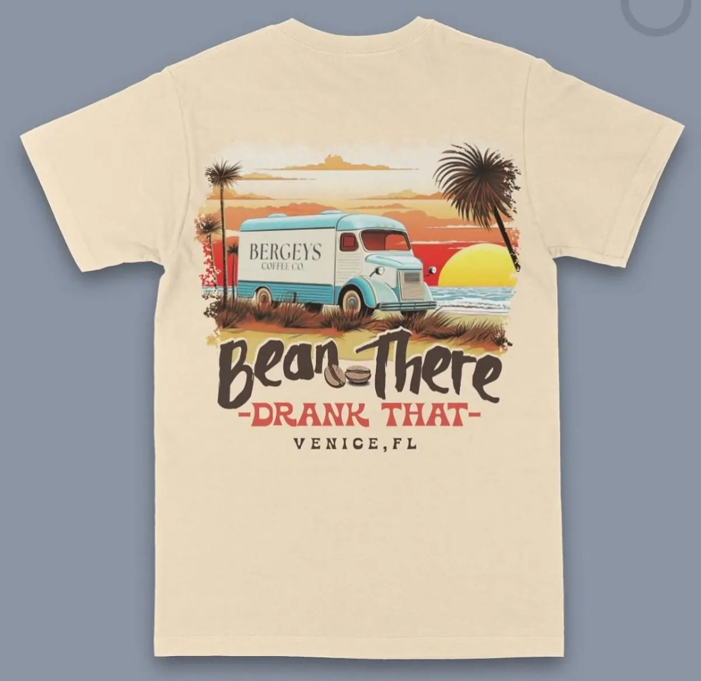

Take the sunshine home
Every roast we pour at the trailer, in 1 lb bags. Pick your bean, choose your grind (coarse, medium, fine or whole bean) and check out securely on Square.

Bagged Coffee · 1 lbDark roastBergey's Espresso Blend
Notes: Chocolate, cocoa and baker's chocolateOur Bergey's Espresso is a smooth blend of our Brazilian Cerrado, Indian Malabar and Ethiopian Guji. The chocolate notes of all three beans are accentuated here, making for a great shot of espresso, though…

Bagged Coffee · 1 lbMedium roastBanyan Blend
Notes: Chocolate, GrapefruitThe ideal, balanced, breakfast blend with notes of milk chocolate and grapefruit.

Bagged Coffee · 1 lbMedium roastCosta Rica Tarrazu La Pastora
Notes: Milk Chocolate and CitrusA perfectly balanced roast with milk chocolate and citrus notes. It’s a go to for those seeking high quality, non-adventurous coffee.

Bagged Coffee · 1 lbMedium/Dark roastPeruvian Nightcap: Decaffeinated
Notes: Chocolate, caramel and molassesOur Nightcap is a MWP Peruvian Decaf, certified as both USDA Organic and Fair Trade. Syrupy and full of sweet chocolaty notes. The perfect way to end the day.

Bagged Coffee · 1 lbOrganic Honduras COMSA
Notes: Red Apple, Brown SugarA very clean, bright roast with apple and brown sugar notes. This one is special, not only because it is an amazing coffee, but also because it is backed by a great mission. “While Jason and I were in Honduras…
 Bagged Coffee · 1 lbDark roast
Bagged Coffee · 1 lbDark roastIndian Monsoon Malabar
Notes: CocoaA very smooth and creamy coffee with cocoa notes. The ideal coffee for those seeking lower acidity, but not lacking in body.

Bagged Coffee · 1 lbMedium roastEthiopian Guji
Notes: Bakers chocolate and strawberryOur Ethiopian Guji is a naturally processed coffee from the Guji zone of the Oromia Region of Southern Ethiopia. On the lighter side, this roast is complex, boasting a nice balance of chocolate and berry notes.
 Bagged Coffee · 1 lb
Bagged Coffee · 1 lbOrganic Nicaraguan SHG UCA: San Juan del Rio Coco
Notes: Dark Chocolate, Brown SugarOrganic Nicaraguan SHG from the UCA San Juan del Rio Coco cooperative. Fully washed Catuai & Caturra.

Bagged Coffee · 1 lbLight roastEthiopian Yirgacheffe Konga
Notes: Floral, ApricotA bright and floral coffee, with a tea-like quality. Notes of citrus and apricot.

MerchBean There T Shirt
“Bean There. Drank That.” · Venice, FLOur cream tee with the Bergeys trailer sunset graphic. Sold through the Bergeys Coffee Co. online store.
Prices and availability come from the Bergeron Roasters Square store and may change. Grab a bag at the trailer too — 1 lb $20 · 5 lbs $100.

Bergeron Roasters
The beans behind every Bergeys drink — from the chocolatey Bergey’s Espresso Blend to the Banyan Blend, named for our home on Banyan Drive.